| |
Top 10 Park Settings
Welcome to an Incrediblecoasters Top 10 List. When we list stuff, we actually explain why. Now a park setting is something that most people never take into account. Most of the time, the theming is so good that it sucks you into its own world or it isn't worth giving a sh*t about. But some parks are actually set in really nice places. Now just because a park looks great and is praised highly for its theming does not mean that it has a good park setting. All of the Disney Parks have fairly bad park settings. Tokyo Disney's park setting is just some dull unintersting Japanese Coastline. And thats actually the best park setting of the Disney parks I've been to. Disneyland is located in the smoggy city of Anaheim, The Walt Disney World Resort's park setting is a Floridian Swamp and Disneyland Paris' park setting is just the French Countryside. In fact, when you look at the entire Disneyland Paris Resort from a satellite, it looks like a giant crop circle. =) And speaking of crappy Farm Park Settings, lets talk about Europa Park. It too, has a dull farm setting on the France and Germany Border. Now all of these parks have great theming and suck you into their own world. There's no need for a good park setting. They create the setting inside the park. But some of these park settings aren't just good, they are amazing and create that sense of theming that really sucks you in and makes you have a great time. So yeah. Lets celebrate a bunch of parks for no reason other than their geographical location. Some of them may be amazing, some of them may suck ass, but all of them managed to have a great park setting. So lets dive right in.
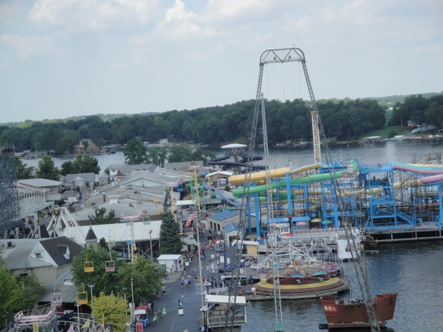
#10.
Gardaland
Castelnuovo del Garda, Veneto, Italy
Located on the edge of Lake Garda, Gardaland has a fantastic setting. As you can tell, many of these settings are right by bodies of water. And Gardaland's setting is fantastic. Its right by Lake Garda, which not only makes the park cooler, but also gives it a nice feel to it. Just look to the side when riding Raptor and you'll get a really nice view. And of course, the view from the observation tower is fantastic. Not only the view of Gardaland, but just the general view of Lake Garda is freaking fantastic. I mean, just look at the photo I took from the observation tower. Its a fantastic view of the largest lake in all of Italy, drawing in many tourists just for the lake alone. And on top of the great view of Lake Garda, you really get a nice view of the mountains that surround the lake. Its no coincidence that they put Gardaland right on the edge of Lake Garda. No, its not to give it a nice setting, but rather to attract tourists in the area seeing Lake Garda. And Gardaland is a really fun theme park. It may not have the best coasters in Italy, but its still a really nice park thats worth your time. Definetly check it out.
 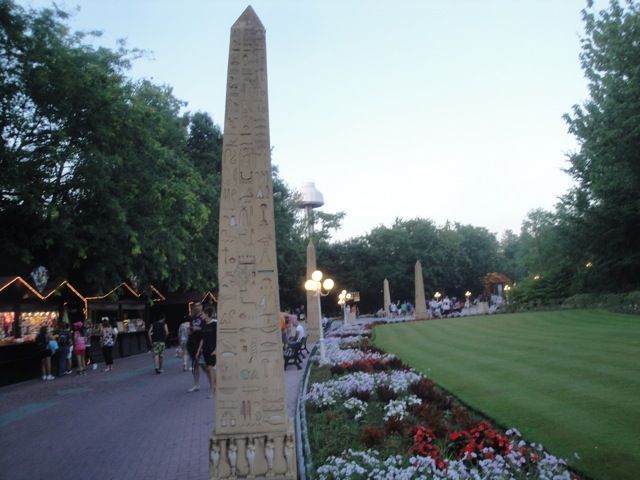 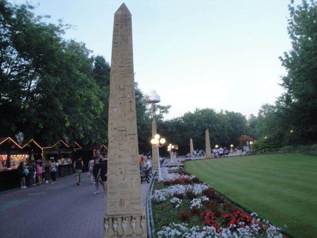
#9.

La Ronde
Montreal, Quebec, Canada
Located on an island in the middle of the St. Lawrence River right in the middle of Montreal, the park setting is fantastic. I love the urban feel that you get from La Ronde. Not only are you right in the middle of the St. Lawrence River, but you can see the Montreal Skyline all throughout the park no matter where you go. Now most main parks for major cities are not directly in the middle of the city. They're usually in a small little town miles outside the main city that all the people flock to to go there. But not La Ronde. Its just on an island. Take the bridge and you're there. They are not worried about hiding La Ronde. They put it proudly on that island for everyone to see which is funny considering after going to La Ronde twice, it does not seem like the kind of park that you want to brag about or show off to the world. The park does seem to be slowly improving, but its still pretty bad. But hey, while you're angry at the fact that you're waiting in an hour for a crappy Vekoma ride solely because the operators are moving a snail like paces, at least you'll something nice to look at in the middle of your rage.

#8.

Santa Monica Pier
& Palace Playland
Santa Monica, California, U.S.A
& Old Orchard Beach, Maine, U.S.A
Now I decided to just lump these two parks together because they both have very similar settings and are very similar parks in general. Both of these parks are located right on the beach, right in the middle of popular beach towns, filled with tacky tourist shops and efforts to give an old beachside setting that comes into most peoples minds when they think of seaside amusement parks. Both of these places are the type of place that you just want to unicycle around in while playing an instrument. They're the type of places that people like to go on dates to. They're both just really nice settings. The Santa Monica Pier is a big staple in Southern California and everyone I know knows about the pier and recognizes it as a big part of Santa Monica. And I can't really judge too much on Palace Playland and Old Orchard Beach since I was just there for one day, but I can easily imagine Old Orchard Beach being a big touristy stop as it felt like that and I have read articles saying that people treat it as a popular sea town destination. Plus, the parks themselves are very similar. They both are small little parks with not much, some flat rides, a main crappy coaster, and are only big because of their setting in a popular town like Santa Monica or Old Orchard Beach. Definetly check them out as both are fun and the towns themselves are a lot of fun.
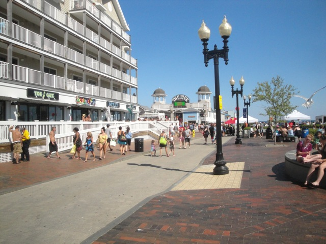
#7.
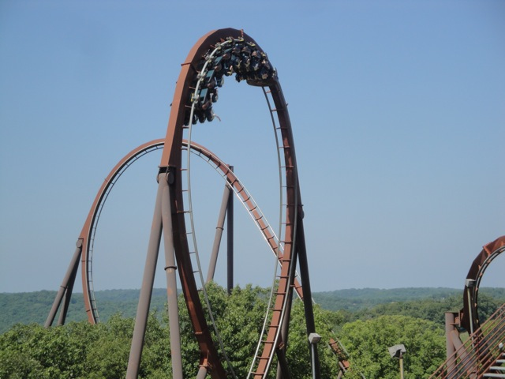
Silver Dollar City
Branson, Missouri, U.S.A
Located right in the middle of the Ozark Mountains right in the middle of Branson, Missouri, Silver Dollar City has a fantastic setting. And it looks NICE!!!! It looks REALLY freaking nice!!!! Its got a nice Smokey Mountain feel that just makes me really wanna go hiking, camping, and most imporantly, cliff jumping. It totally has that mountain vibe to it that really rings awesome beauty to it. But Silver Dollar City doesn't just use this setting to look nice, it uses it to its advantage and incorporates the amazing setting with its already amazing theming to really make it pop. Yeah. You know how I was mentioning parks with great theming but not great settings such as the Disney Parks and Europa Park? This park not only has great theming, but a great setting to back it up and enhance said theming even more. Silver Dollar City is themed to an old western town in the 1880s. See, while places like Disney take you to imaginary places such as Fantasy Land or Tomorrow Land and places like Europa Park take you to an entire continent in one place, Silver Dollar City works to take you back in time. This gives it a big setting advantage as they place their park in a strategic setting, right where the park is themed to. They can use theming to take you back, but the setting of the Ozarks in the 1880s is still there, and it looks awesome, which gives the park a big advantage. You can't place your park in an imaginary place such as Fantasyland and I really want to see the first theme park to be located in all the European Countries at the same time. Please tell me that doing so means involving teleportation. =) But yeah. Its a great setting to go with great theming for a great park. Definetly check it out.

#6.

Tusenfryd
Vinterbro, Oslo, Norway
Located right in the hills and mountains of Norway, yeah. This is something that just has to make the list. OK. I know that most amusement parks aren't exactly in great locations. And just because the park is in a really nice place, that doesn't necesarry mean that the setting is automatically great. But Norway is just too awesome. I honestly don't think there's a bad spot of land in the country. It really is one of the most beautiful countries out there. And this directly translates into Tuenfryd. Far from the best theme park out there, but the park does have an amazing setting. The whole thing is pretty much just embedded into the mountains. So, you're going to have to take an escelator to get to the top of this park. And yeah. If you're someone who is out of shape, this is not going to be a good park that you'll enjoy. There are a lot of hills here, and they will tire you out. But then again, Norwegians tend to be in much better shape. ;) But still. The hills are gorgeous, and the view from the top is fantastic. The freeway seems to be down in a canyon, so while you're up on the hill, you see the other side, and all the trees. I know by Norway standards, this is pretty tame, but overall, still a fantastic park setting.
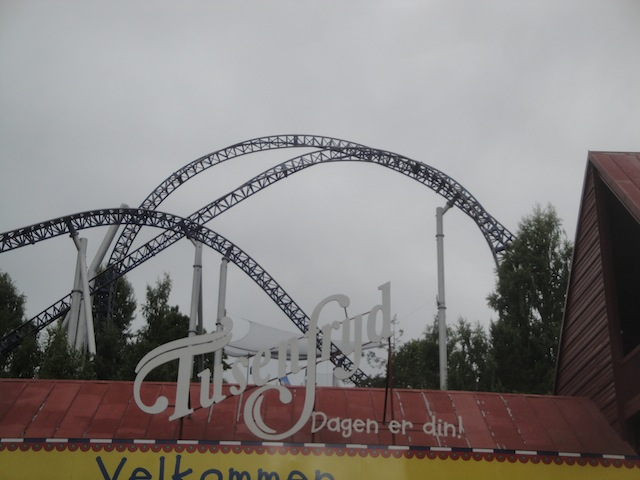
#5.
<

Tivoli Gardens
Copenhagen, Sjælland, Denmark
This park is located right smack dab in the middle of Copenhagen. I'm not exxagerating. I'm not just saying that as a way of saying the park is really close to Copenhagen. It's right in the freaking city! And it's not on the outskirts either. It's not something that's technically in the city, but far away from the rest of the sights of Copenhagen. No. It's right smack dab in the middle of the city. So the rest of the Copenhagen sights don't mind Tivoli Gardens being right there? Mind!? Tivoli Gardens IS one of the main attractions of Copenhagen. It's not just something that people in the city go to to get away from the city. To get away from the city. No. Tivoli Gardens is a part of the city. A major part of the city. Tivoli Gardens is just as much a part of Copenhagen as the Little Mermaid, or Amalienborg, or Rosenborg Castle. Tivoli Gardens doesn't have a great atmosphere that it borrows from Copenhagen. It interacts with the rest of Copenhagen, and helps create the atmosphere and setting of Copenhagen. It was literally bombed by Nazis during World War II, when they were taking over Denmark and wanted to destroy prominent parts of Copenhagen. And it's not like Copenhagen is just a random city in Europe. It's currently my favorite city. I love everything about the city, and Tivoli Gardens plays a big role in that. I love the atmosphere, both of the park, and the city. So yeah. Come on up to Copenhagen and visit Tivoli Gardens. Copenhagen is a great city, and Tivoli Gardens is a fantatic theme park.
 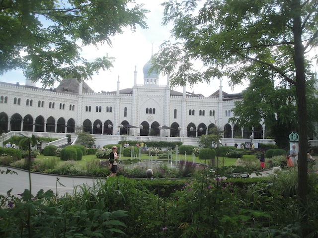 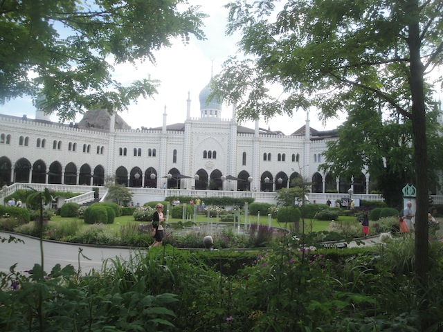
#4.
<

Yokohama Cosmoworld
Yokohama, Kanagawa, Japan
This park is ALL about the setting and the view. Cause as for the park itself, it's not exactly that great. The coasters aren't that special. The mouse is pretty lame. And while Vanish may look gorgeous, it's not a very thrilling ride. However, what makes Vanish such a famous coaster is A: It's water tunnel that gives it the illusion of diving into the water. B: The setting. And yeah. Not just for Vanish, but the entire setting of Yokohama Cosmoworld is amazing. You don't come here for the park as I already mentioned that the rides are nothing special. No, you come here because you want to explore Yokohama, see all the cool stuff around here, and hey look. There's a roller coaster. Might as well give that a ride and have some fun. So in a way, this is sort of the Santa Monica Pier of Japan in a weird way. Except....Yokohama is MUCH better than Santa Monica. The Cosmo Clock is freaking one of the Yokohama landmarks just like the Yokohama Tower is. The other rides and roller coasters around it are just window dressing. So yeah. The park itself may not be anything special, but Yokohama is a really fun place to visit. I'd definetly recommend checking this place out solely for the setting and non-coaster reasons. The park is just an added bonus. =)
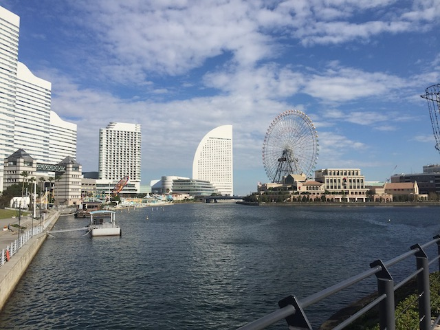
#3.

Glenwood Caverns Adventure Park
Glenwood Springs, Colorado, U.S.A
Just look at where this park is located. Just...look at the location of this park. If you're driving down the freeway, looking for Glenwood Caverns Adventure Park, do you know where to find the park? Can you spot the park from the freeway? Technically, you can. But my god. It's a f*cking challenge. So where is this park located? Look up. You see that roller coaster, way up on the mountain? Yep. That's Glenwood Caverns Adventure Park. And if you're going to want to go here, you're going to have to hop onto that gondola. The entire park is way up on the mountain. It feels like going to a ski resort when heading up here. And when you're up here, the view, it's simply fantastic. Colorado already is one of my favorite states, and I love being up in the mountains. So when you have a theme park just right up there, looking down on everything, you're going to say "YES!!!". I mean, forget about the rides on the Stratosphere Tower. Having a Screaming Swing that literally goes over the edge of a cliff!? HOLY SH*T!!! BEST VIEW EVER!!! And if you're afraid of heights, this ride suddenly got a whole lot more terrifying. And it's not just the Screamin Swing. The whole park takes advantage of the setting. They have a zipline that goes down the mountain (Not the entire mountain. I F*CKING WISH!!!), and the alpine coaster literally just snakes down the mountain, really taking you for a wild ride. It's by far one of the most unique parks in America, and something you should check out. I mean, the view is to die for.
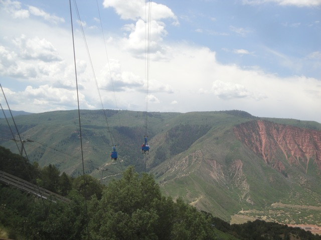
#2.
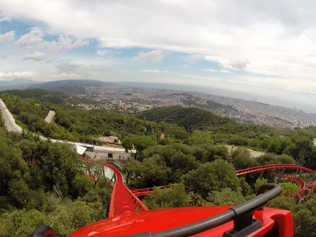
Tibidabo
Barcelona, Catalonia, Spain
OK. Now it's pretty obvious why Tibidabo is on the list. I mean, just like the last park, Glenwood Caverns Adventure Park, is also located up on a mountain. However, Tibidabo isn't just up on top of a mountain. No, it's on top of a mountain that overlooks freaking Barcelona! So you not only get the great mountain views, but also, you're looking down over a major European city! I mean...that is so freaking cool! And just like at Glenwood Caverns Adventure Park, Tibidabo also really takes advantage of its geography, by having several rides where the whole thrill is the fact that you're on the mountain and overlooking Barcelona. These rides, Plane on a Stick, and Bucket on a Stick, also get some people who are afraid of heights not only by the heights, but also the fact that these rides are homemade, so the homemade look might increase fear and panic for those who are afraid of heights. And I'm sorry to Vegas fans, but looking down on Barcelona is FAR superior to looking down on Las Vegas. And the other rides take advantage of the terrain and just provide beautiful views of Barcelona. I mean, just look at the top of Muntanya Russa. It's amazing. And because of it being way up there, getting here is an adventure in itself. Climb up the mountain, and see all of Barcelona, as well as all of Tibidabo.
 
#1.

Gröna Lund
Stockholm, Stockholm, Sweden
Located right on the waters, along the Baltic Sea, Gröna Lund just seems to have, the best of both worlds. It's located right in the heart of Stockholm, so you're going to get all of the atmosphere from that city oozing through Gröna Lund. And Stockholm has quite a lot of atmosphere and charm to it. Nearly all the European Cities do. And part of that Stockholm charm and atmosphere is the fact that the city is pretty much an archipeligo in the middle of the Baltic Sea. So Gröna Lund doesn't just have a city park vibe, but also a seaside park vibe. The park is very boardwalky. All those pier parks, and boardwalks that I've talked about, Gröna Lund has a very similar vibe to them. OK, it may not give off the vibe of just grabbing a corn dog and laying on the beach. The Stockholm beaches aren't exactly like that. But it is very pleasant by the sea. You see all the ships pass you by, and it looks nice in both directions. It's just a nice bundle of twisted track right by the seaside. And the atmosphere in the park, it's packed with rides. Gröna Lund is a tiny little park. It's like....Dinky Park from RCT3. And yet, look at all that they manage to squeeze into the park. Rides are just built on top of each other and twist and snake over and through one another. So there's all this steel twisting right above you. And it makes you wonder how the hell any park complains about space problems. And all those coasters, combined with Stockholm, and the sea. I can't not put it at #1. Get out to Gröna Lund ASAP.
 
So now I'm sure you know what you're thinking. "Wow. That was the list. That is so wrong." Well no. This is just the current list. I haven't been to every single park in the world. Which is why some choices aren't listed that others would call me insane for not including. Like Ocean Park in Hong Kong. From the photos I've seen of the place, the setting looks un-freaking-believable and would sh*t all over everything on this list. The only teeny tiny little problem with including it is that I have never been to Ocean Park and I can not judge a place that I have not been to before. But I certainly hope that the list will be updated to include it as Ocean Park seems like a cool park. But hey, these are all good park settings. Some of them may not be super amazing, but I like them all. I mean, they're all better than say something just plopped in the middle of nowhere, with no effort of theming or anything making it in a nice area. And of course, park setting isn't everything as some of the parks on the list may have been amazing, some have also sucked. But hey. They're all nice.
|